: Undo the last command
: Undo the last command : Displays the course settings window
: Displays the course settings window© 2008-2018 Pierre Delore (pierre@TechAndRun.com), CC BY-NC
Course Generator allows you to process your GPS files in order to :
And many other things…
Writing conventions have been adopted in this manual. They are detailed below.
I created Course Generator in 2008 to help me prepare for my first 100km Ultramarathon trail race. I improved the software based on my needs. A small article in Ultrafondu (French magazine) allowed me to start making it known and I then made it grow with the user feedbacks. It has evolved enormously and many times, I have rewritten it to fit my needs. Each time it was a challenge and like the races that I ran, it was an adventure that made me grow (knowledge, questioning, open-mindedness …).
Course Generator does not pretend to give you totally accurate results. Too much depends on you and external conditions. Consider this software as a help to prepare your futur adventures.
You notice that I didn’t use the term “race” because for me the “adventure” approach of a race, as hard as it is, has always allowed me to go through with its positive approach (not to mention the chrono anyway:) ).
The development of Course Generator has been and continues to be an adventure.
If you like this software you can contribute in different ways:
Go on an adventure with Course Generator.
Pierre DELORE
The software collects information about your hardware and software configuration in the logs. These data are in the ‘logs’ directory which can be accessed via the menu “Tools> Open the”Speed/Slope" folder". Nothing exits from your computer. It is only in case of problem that I will ask you to send me the ‘logs’ files.
To work, Course Generator needs, as input, data containing a sequence of GPS points representing a track.
This data can be:
The GPX format is a standard cartographic data exchange format created by GARMIN.These data are either from a GPS or from a software or website.
It allows to exchange:
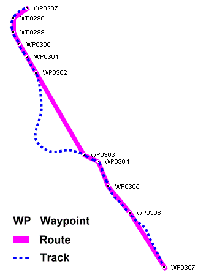
Wikipedia source
When opening a GPX file, Course Generator only read tracks. Other type of data are ignored.
The CGX format is the native format of Course Generator. It allows in addition to the latitude, longitude and altitude, to store all specific data of Course Generator. This includes for example: ground difficulty, aid station, comments, mini-roadbook data … This format allows you to exchange a track with a complete set of information about it.
The diagram below shows the operating principle of Course Generator.
The following use cases could be considered (non-exhaustive list):
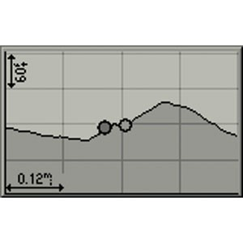
Do I need to own a Garmin GPS device to use Course Generator?
No! But it’s a plus if you want to use the virtual partner feature. That’s what pushed me to create Course Generator (even though now I almost don’t use this feature anymore).
Upon starting the software, the following window is displayed :
The software’s GUI is made of (from top to bottom):
Open GPX : Loads a GPX format file. Keyboard shortcut: [MAJ+CTRL+O].
Recent GPX files : Displays a list of the last 5 GPX files that have been loaded. Clicking on one of those files will load them again.
Open CGX : Loads a CGX format file. Keyboard shortcut: [CTRL+O].
Recent CGX files : Displays a list of the last 5 CGX files that have been loaded. Clicking on one of those files will load them again.
Save as CGX : Saves the course data in CGX format. All the course data (difficulty, fatigue coefficient, aid station time…) will be asved. Keyboard shortcut: [CTRL+S].
Save as GPX : Saves the course data in GPX format. Warning! Only latitude, longitude and altitude data will be saved.
Save as CSV : Saves the course data in CSV format. The saved file can be opened by a spreadsheet such as Excel or LibreOffice Calc.
Import a GPX file : Imports a GPX file at the beginning or end of the current course
Import a CGX file : Imports a CGX file at the beginning or end of the current course.
Save selection as CGX : Saves the selected line(s) in a CGX file. All the course data (difficulties, fatigue coefficient, aid station time….) will be saved.
Save selection as GPX : Saves the selected lines in a GPX file. Warning! Only latitude, longitude and altitude data will be saved.
Save selection as CSV : Saves the selected lines in a CSV file. The saved file can be opened by a spreadsheet such as Excel or LibreOffice Calc.
Import points : Imports waypoints as CGP format.
Export points : Saves the selected waypoints in a CGP file.
Export tags as waypoints : Saves the selected tags as waypoints in a GPX file. This allows to benefitiate, when using a GPS device, additional information on top of the course.
Exit Course Generator : Exits Course Generator. Keyboard shortcut: [Alt+F4].
Copy : Copies the selected line in the clipboard. Keyboard shortcut: [CTRL+C].
Search a point… : Searches a GPS point using longitude and latitude coordinates. The closest point found will be returned. Keyboard shortcut: [CTRL+F].
Read only mode : Select or unselect the read only mode. In this mode no parameters modification is allowed.
Mark the current position : Sets a mark on the selected line. If the line already has a mark, the mark will be deleted. Keyboard shortcut: [F6].
Go to the next mark : Locates and selects the next mark. Keyboard shortcut: [F7].
Go to the previous mark : Locates and selects the previous mark. Keyboard shortcut: [Ctrl+F7].
Find Min/Max : Determines the highest and lowest course points.
Reverse track : Reverse the course direction.
Define a new start: For a given course as a loop, sets the selected point as the start of the course.
Estimate track time : Compute the estimated time for each of the course’s points. Keyboard shortcut: [F5].
Update standard curves : The standard “Speed/slope” will be updated with standard settings. It’s necessary to use this menu if you modified a standard curve and you want to retrieve the standard settings. It’s also necessary after a software update that introduce new standard curves. It doesn’t affect the custom curves.
Open the “Speed/Slope” folder : Opens the folder containing the speed curve files in File Explorer.
Track settings… : Opens the dialog to configure the course settings. Keyboard shortcut: [F9].
Speed/Slope curves… : Opens the dialog to choose, create, modify or delete a speed/slope curve.
Course Generator settings… : Opens the dialog to change the main settings of Course Generator.
Help : Displays this current document.
F.A.Q. : Open your browser and display the Frequently Asked Question page about Course Generator.
Download courses : Open your browser and display the Freemovin page where you can download tracks in CGX format.
Check for update : Check if a Course Generator update exists.
Support the author… : This menu opens your web browser and displays a webpage where a donation can be made to the author in order to support him continue developing Course Generator.
Course Generator webpage… : This menu opens your web browser onto the main webpage of Course Generator.
About… : Displays the copyright and version information of Course Generator.
: Undo the last command : Displays the course settings windowLocated at the bottom of the main GUI, it displays the general information related to the software status and the course.
 : Chosen ‘speed/slope’.
: Chosen ‘speed/slope’.The top area contains a series of tabs that allow you to choose the type of data to display.
This tab displays all the data of the track.
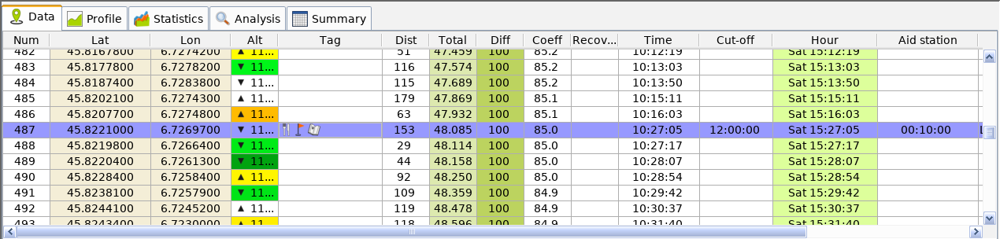
A double click on one of the lines opens the edit window.
The details of the columns are described below:
 : Indicates a water point.
: Indicates a water point. : Indicates the beginning or the end of a roadbook section.
: Indicates the beginning or the end of a roadbook section.This tab displays the track profile.
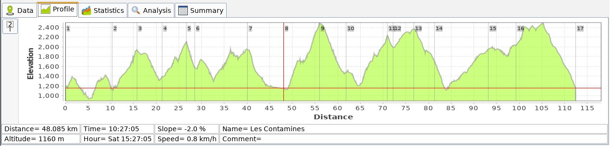
If a mark has been positioned in the table then a point appears on the curve as well as its serial number. This number corresponds to the table row of the Summary tab.
A left click on the curve makes it possible to position a cursor and to obtain information on the point (information coming from the data table).
A right click on the curve displays a menu to adjust the display of the curve and save the display as an image (PNG format).
The button displays the row position of the “Summary” table.
This tab provides statistics on the track.
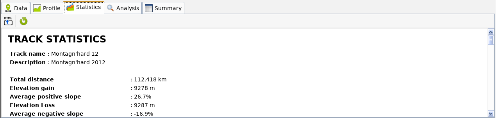
Statistics contain among other things:
The button saves this data in HTML format.
The button  refreshes the data.
refreshes the data.
This tab allows to obtain an analysis of your track. It contains 3 sub-tabs which are detailed below.
This tab allows you to analyze your speed over time.
Two curves are displayed:
The study of the curve of time/distance allows to see its evolution on the track (acceleration, slowdown, stopped). The change of slope of the red curve indicates a variation of speed.
The following cases are possible:
This tab allows you to get an analysis of the speed on your track.

Two curves are present:
A right click on the curve display a menu allowing to save the curve as an image.
This tab is used to extrapolate a speed curve over the slope.
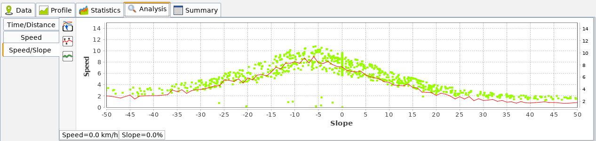
This curve is useful for creating its own speed/slope curves according to a previous track.
Two curves are present:
The button saves the result curve (red curve) in the speed/slope curve library. It will be useable in the curves dialog.
The following dialog appears:

The “Name” input field is used to enter the name of the curve.
The “Comment” input field is used to enter a comment.
The button corrects the speed/slope curve with the track parameters (terrain difficulty and fatigue).
The button allows to filter the speed of the speed/slope curve.
This tab displays a table containing all the lines of the track containing a mark.
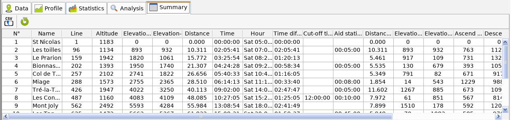
For each line you have:
The button saves the table data in CSV format in order to be used in a spreadsheet (Excel, OpenOffice Calc …).
The button allows you to refresh the data.
A double clic on a line open’s the line editor for the corresponding point.
The normal procedure for using Course Generator is:
The below chapters will describe all these manipulations (And much more).
Two types of files can be opened by Course Generator.
The loading of a track is done by the menu “File> Open GPX” or “File> Open CGX” according to the chosen format.
If the track contain a too high density of GPS points, the software will ask you if you want to apply a filter to reduce the number of GPS points. A too high density of GPS points can disturb the distance calculations.
If you load a GPX file that have no time data the Course Generator will the time for each point of the track at 0. It will be necessary to click on the button to start the calculation of the time for each point.
The setting of the track is done with “Settings>Track settings…” or [F9].
The configuration window below is then displayed.
You can then:
The following window appears:
Enter the time zone (1 for France).
Once the setting is completed, press “Ok” to validate. If you have chosen to take into account the night effect, you will see that :
In order to have a track time consistent with your speed, you have to choose or create a speed curve according to the slope. This curve goes from -50% slope (downhill) to + 50% slope (climb). The choice of the curve is made by the choice of the speed that one wants to “hold” when the slope is null (0%) on a road. A set of curves has been created to cover most running speeds.
The menu “Settings>Speed/Slope curves…” or the button will display the dialog box for selecting and managing curves.
On the left appears the list of curves already created. During the creation, an explicit name was assigned to them to find them quickly. Try to preserve this principle if you create new curves.
The button 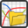 loads the data from the selected curve file into the list.
The button allows you to modify the data of the selected curve.
The button allows you to create a new curve.
The button 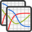 duplicates the selected curve.
The button deletes the selected curve.
How to choose a speed curve? This will depend on you, your goals… You can base yourself on a percentage of your vVO2max. For example for a long trail you can take 60% of your vVO2max. About 10km/h in my case, I then select the curve of 10km/h. There is also the pratice. At the beginning you will surely underestimate or overestimate your speed. But over time your choice will become more and more accurate.
Notes:
* If you create new curves that seem interesting to you, do not hesitate to send them to me so that I can add them on the website as well as in the next versions. * Each curve is a file whose extension is ‘.par’. These files are accessible through the menu “Tools>Open”Speed/Slope" folder". This will open the file manager and display the contents of the directory.
The “Diff” column is used to ‘quantify’ the difficulty of the terrain.
You can quickly enter terrain difficulty for a set of points. Simply select the first line and then while holding down the SHIFT key you select the following lines (with mouse or keyboard). The button will display the auto-fill dialog.
The “Start” area is used to define the start line (from the beginning or from a specific line number). The “End” area is used to define the end line (to the end or to a specific line number). The zone “Difficulty” makes it possible to choose the difficulty of the terrain. You can either use the pre-determined values or enter your own difficulty value.
This action can also be done on the track map (see below).
Note:
It is sometimes impossible to determine or know the quality of the terrain. It may be wise to set an average terrain quality for the entire track. For example, the “Montagn’hard 100” has been rated as “average” terrain. Even if some sections were very difficult (scree, slippery areas …) and other very easy (roads or tracks). Don’t try to take into account the slope of the terrain because this is taken into account via the “Speed/Slope” curve and the calculation of the slope is automatically done by Course Generator.
The “Coeff” column is used to ‘quantify’ fatigue over time.
You can quickly enter the fatigue coefficient for a set of points (usually for the entire track). Simply select the first line and then while holding down the SHIFT key select the following lines (with mouse or keyboard). The button allows to display the auto-fill dialog.
The “Start” area is used to define the start line (from the beginning or from a specific line number). The “Initial value” field is used to enter the corresponding value.
The “End” area is used to define the end line (to the end or to a specific line number). The “Ending value” field is used to enter the corresponding value.
If the ending value is not equal to the initial value then the intermediate lines will have a gradual and linear variation of the values. Manual edits made through the line editor will be overwritten.
The settings made in this window will be global and stored in the CGX file.
The area “Help” allows according to your estimated to give you an approximate value of the coefficient of fatigue. This value can be copied to in the “Initial value” and “Ending value” fields with the buttons “> Start” and “> End”.
In order to stick to reality, you can enter the time you plan to spend at a specific location (refueling, rest…).
The following dialog box is displayed:
The “Aid station time” fields are used to enter the time at this location (hours, minutes and seconds). The “0” button allows you to reset the time to 00h00mm00s.
FAQ! The time or hour displayed on the line containing a refueling time is the time or hour you plan to leave from this position, NOT the time you plan to arrive at this position. It’s the design of Course Generator that forces this method of calculation.
To summarize: [Hour] = [Hour of the previous position] + [Travel time between 2 positions] + [Refueling time]
[Time] = [Time of the previous position] + [Travel time between 2 positions] + [Refueling time]
You can enter for a given point the recovery coefficient after refueling or rest. To do this, go to the corresponding cell and open the line editor by double-clicking.
The following dialog box is displayed:
The “Recovery” field is used to enter the recovery coefficient (between 0 and 100). This value is relative. If you think that you will recover 5% of fatigue coefficient, you must enter 5 and not the value you think you will have (eg from 85% to 90%).
Note :
After modifying the “Recovery” column, it is necessary to restart a global calculation with the button in order to have your input taken into account.
You can enter for a given point the scheduled ccut-off time. This cut-off time is expressed in time since the start and not the time at the point. This makes it possible to take into account the departure delays (for example the UTMB 2011 was delayed by 5 hours). To do this, go to the corresponding cell and open the line editor by double-clicking.
The following dialog box is displayed:
The “Cut-off time” fields are used to enter the cut-off time (hours, minutes and seconds). The “0” button allows you to reset the time to 00h00mm00s.
In order to take into account the input it is necessary to run a calculation with the button . After the calculation if one of the position time exceeds a cut-off time then a red indicator “Cut-off time” will appear in the status bar. A click on the indicator will select the first line of the trackthe first line where the cut-off time has been exceeded.
For each point you can have indicators or tags that indicates a particularity of the point.
The different indicators are as follows:
: Indicates a water point. : Indicates the beginning of a new part of the roadbook.To set the indicators for a position, select the corresponding cell and open the line editor by double-clicking.
The following dialog box is displayed:
The indicators appear in front of “Tags”.
In order to save time, keyboard shortcuts are available:
Once the track parameters have been entered, it is necessary to click on the button to start the calculation of the time for each point. The columns ‘Time’ and ‘Hours’ are then updated according to the settings you have made previously. In the status bar at the bottom of the window, the total time is updated.
Course Generator offers the possibility to save your track in several formats.
This chapter will introduce you to more advanced uses of Course Generator.
It is possible to search for a GPS point on the track via the “Edit>Search a point…” menu or with the keyboard shortcut [Ctrl + F].
In the dialog box, it is necessary to enter the latitude and longitude of the point and then press the search button .
Course Generator will search for the closest point given a set of coordinates. It will indicate the line corresponding to the point found as well as the distance between the point found and the coordinates entered. The line containing the found point will then be selected.
The “Tools>Find Min/Max” menu is used to automatically find the highest and lowest point of the track.
Each found position is marked with an indicator (high point) or (low point).
It can happen that the elevation data of a track is inaccurate. This can happen if you, or an Openrunner type website, have made an automatic correction of altitudes. The SRTM database on which these sites are based has area without altitude. The given base then returns an altitude of 32768m. In order to overcome this problem you can edit the altitude of the erroneous point(s).
To do this, go to the corresponding cell and open the line editor by double-clicking.
The following dialog box is displayed:
The “Altitude” field is used to enter the new altitude.
It will be necessary to restart a calculation with the button to take into account the new altitude.
Course Generator offers the opportunity to merge two tracks.
The procedure is as follows:
If you have other tracks to merge, simply repeat the process.
After merging the tracks you will have to modify the settings of the fatigue coefficients and restart a computation (button or [F5]) because the time data will be wrong.
Once you have completed the merge and restarted a calculation, you will be able to save the track.
Course Generator allows to save a section of a track.
The procedure is as follows:
Course Generator offers the ability to save GPS points containing tags (or indicator) as a waypoint. These waypoints can be added to your GPS to have, for example, the display of the track with additional information such as passes, aid stations and cities.
The procedure is as follows:
The operation of this file can be done, for example, with Garmin’s Basecamp software.
The contents of a cell in the track table can be copied to the clipboard for use in other software. To perform this action simply select “Edit>Copy”. The content of the selected cell is copied to the clipboard as text.
Course Generator offers the possibility to generate a mini roadbook. This will contain the profile of the track and informations on your way points. The mini roadbook is accessible via “Display>Generate mini roadbook”.
At the end of the process the mini-roadbook is an image. This image can be printed using drawing software such as Paint, Photoshop or The Gimp. It can also be used in other software like Word, Excel, Inkscape, Illustrator …
The settings made to generate the mini roadbook are saved in the CGX file of the track. If you exchange a track in CGX format, you will exchange the track with all its informations (refueling, terrain quality, cut-off times …) and the mini roadbook.
To be able to use the mini roadbook it is necessary to have previously set the parameters of your track. This includes:
. “Display>Generate mini roadbook” or the button displays the following window:
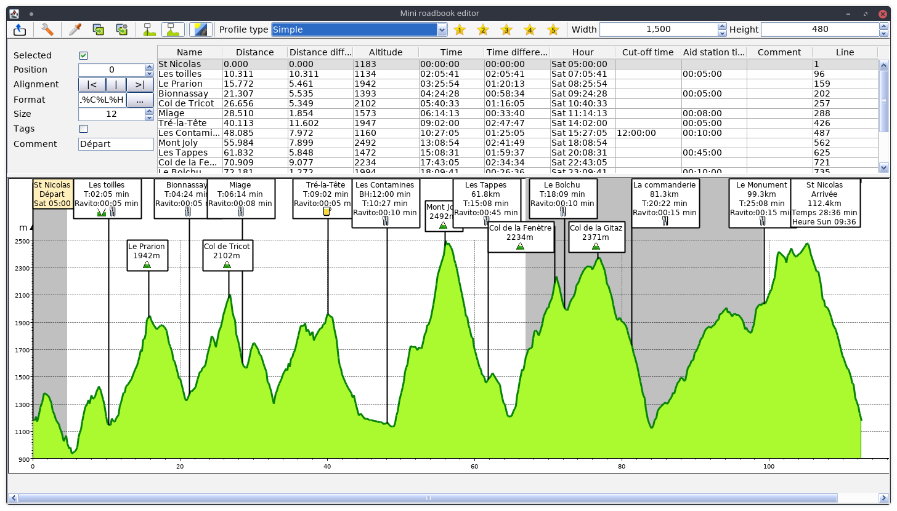
It contains the following elements:
and one or more of the following indicators: . Each line generates a label in the mini roadbookWhen a line is selected then the corresponding label color change (salmon color).
In the top bar, the “Profile type” drop-down list allows you to choose among the 3 types of profile:
The “Simple” type:
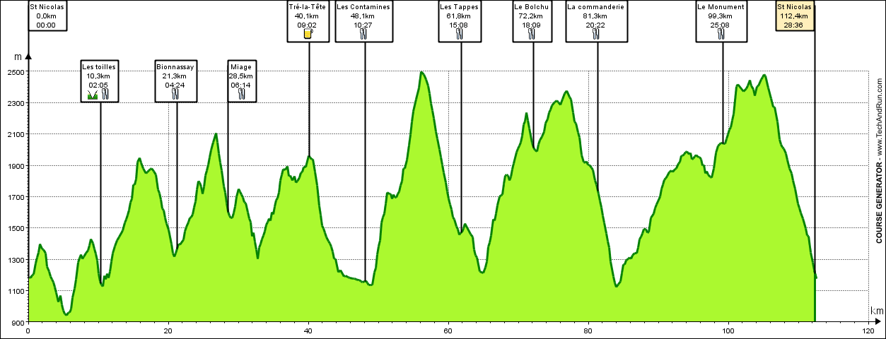
The track profile does not contain any additional information.
The “Roads/Trails” type:

The profile highlights the portions of the roads and trails with a color code. The roads are the points of the track table whose field coefficient is equal to 100%. The others are considered as trails.
The “Slope” type :
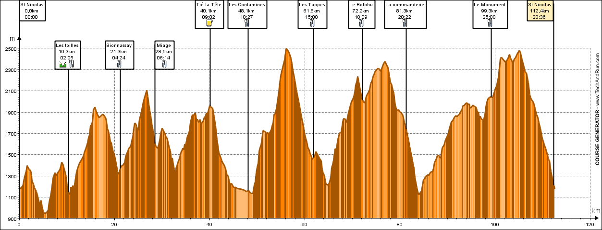
The profile highlights the degree of slope by a color code.
The colors used in the mini roadbook can be set in the configuration window accessible with the button .
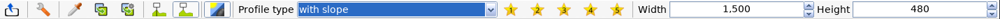
: Opens a window for configuring the duplicate formatting feature as shown below: 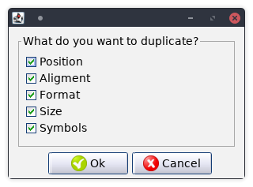
Select the settings you want to duplicate when copying.
“Height” : Allows you to select the height of the profile (Maximum value 2000 pixels).
The maximum size of the mini roadbook is 4000x2000 pixels (Width x Height). It is also the size of the final image.
The size setting is made by the “Width” and “Height” fields located in the icon bar.
The icon opens the configuration window.
The “General” tab allows you to:
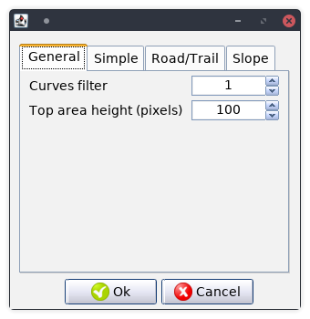
The “Simple” tab is used to adjust the colors of the “Simple” display of the profile.
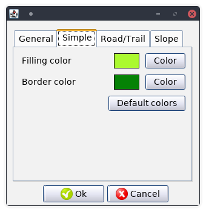
The “Default Colors” button is used to replace the current colors with the default colors.
The “Roads/Trails” tab is used to adjust the colors of the “Roads/Trails” display of the profile.

The “Default Colors” button is used to replace the current colors with the default colors.
The “Slope” tab is used to adjust the colors of the “Slope” display of the profile.
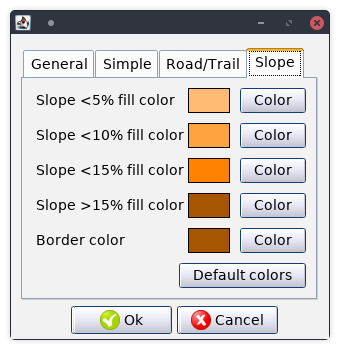
The “Default Colors” button is used to replace the current colors with the default colors.
Each line of the table represents a label. It can be configured by the setting items on the left of the table.
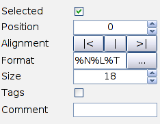
To ensure optimal flexibility, the format of labels uses tags. These tags, represented by the sign “%” plus one or more characters, allow to specify the type of data to display. For example, “% N” represents the name of the point. When the tag is displayed, the tags are replaced by their meanings.
The following tags are available:
The “…” button, next to the “Format” field, opens a window allowing you to simplify the content of the selected label.
If in the track settings the night effect has been activated, then the button will display the day and night times.
The night times are displayed with a gray background.
Course Generator can reverse the direction of any given track. To perform this action select “Tools>Reverse track”. After the operation, it is necessary to redefine the fatigue coefficients and cut-off time and then restart a calculation (button or [F5]).
Course Generator offers the possibility, if the track loaded in memory is a loop, to define a new starting point.
The procedure is as follows:
After the operation it is necessary to redefine the fatigue coefficients and cut-off times and then restart a calculation (button or [F5]).
Le menu “Paramètres>Paramètres de Course Generator” affiche la fenêtre de configuration du logiciel. The “Settings>Course Generator Settings” menu displays the software configuration window.
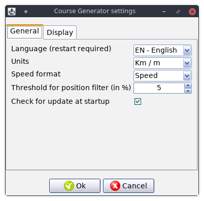
The possible settings are:
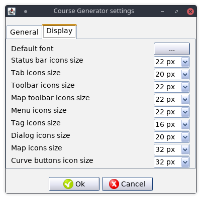
The possible settings are:
In some cases it is necessary to save only the marked points of the current track in a file. This allows, if you have a new version of the course, to import these points on the new track.
For example:
You have the track of the UTMB. You’ve spent time scouting each pass, aid station, and you’ve entered comments on parts of the track. Unfortunately, the track of the following year is slightly different but the main points are the same. The import/export function of marked points will save you a lot of time.
The procedure is as follows:
Course Generator allows you to analyze the data after completing the track. Just open the file containing the GPS data (often a GPX file). You will find in the table all your data. Reports allow you to have information that data.
The data will remain unchanged until you ask for a calculation of the travel time. A window will ask you if you want to overwrite the temporal data.
Course Generator displaying a course on an OpenStreetMap map.
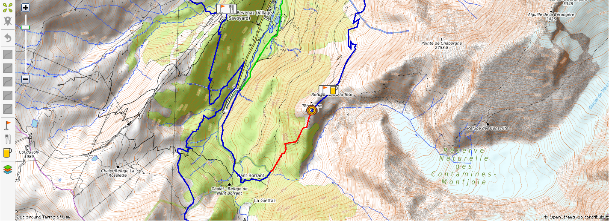
On the left, a vertical bar of buttons allows actions on this map.
 : Cancels the last operation
: Cancels the last operation : Adds a mark to the current point.
: Adds a mark to the current point. : Adds an aid station to the current point.
: Adds an aid station to the current point.The mouse commands are as follows:
To change the quality of the terrain for a part of the track, you must:
In the status bar, the indicator indicates the disk size used by the maps. The menu “Tools>Open ‘Speed/slope’ folder” will open the file manager and display the contents of the directory containing the curves, the logs and the directory containing the maps. The directory “OpenStreetMapTileCache” contains the map files. If needed, you can delete its contents to save space.
The altitude measurements made by a GPS are based, as for the position, on triangulation. Unfortunately, this triangulation is less accurate than for the position. Over long distances, these errors are not negligible and can cause calculation errors on total distance or the total elevation gain.
It is then necessary to carry out a calibration operation of the altitudes. This operation consists of replacing, for each GPS point, the altitude measured by the true altitude.
There are several tools available to do this operation. Among these, GPSVisualizer will fix, for any given GPX file, the altitude of each GPS point and generate an output with the corrected values.
The tool is available at the following address http://www.gpsvisualizer.com/elevation
Note:
Course Generator does not contain an elaborate algorithm for filtering altitudes. The only filter used will work only if the elevation sum is greater than a specific threshold (10m). This is designed to hide the small asperities of the terrain like a rock or a tree trunk. The GPS devices being more and more accurate, these asperities are taken into account in the calculations and can create inaccuracies in the different computations.
Some tracks, especially when they have been recorded out in the field with a GPS device, contain several thousand points. This can cause problems with some software, websites or GPS.
The GPSVisualizer website smartly reduces the number of points without loss of “information” on the track.
The tool is available at the following address http://www.gpsvisualizer.com/convert_input